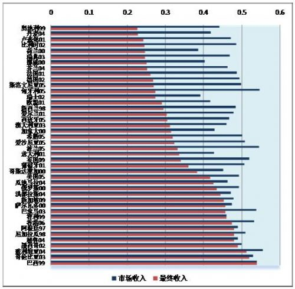

返回主页
图10：各国市场收入与最终收入基尼系数的差别

(数据来源：拉丁美洲数据来自Rodrigo Cubero and Ivanna Vladkova Hollar, “Equity and Fiscal Policy: The Income Distribution Effects of Taxation and Social Spending in Central America,” IMP Working Papers, WP/10/112 (May 2010), http://www.imf.org/external/pubs/ft/wp/2010/wp10112.pdf; 发达国家的数据来自David K. Jesuit and Vincent A. Mahler’s “Fiscal Redistribution Dataset” Version 2.0 (Feb. 2008), http://www.lisproject.org/publications/fiscalredistdata/fiscred.htm; 新加坡的数据来自Singapore Department of Statistics, “Key Household Income Trends, 2009” (Feb. 2010), http://www.singstat.gov.sg/pubn/papers/economy/op-s16.pdf; 俄罗斯数据来自Michele Giammatteo, “Inequality in Transition Countries: The Contribution of Markets and Government Taxes and Transfers,” Luxembourg Income Study (LIS) Working Paper Series No. 444 (August, 2006), http://www.lisproject.org/publications/liswps/443.pdf.)
version:1.0; jobnet@188.com © retter2012.com